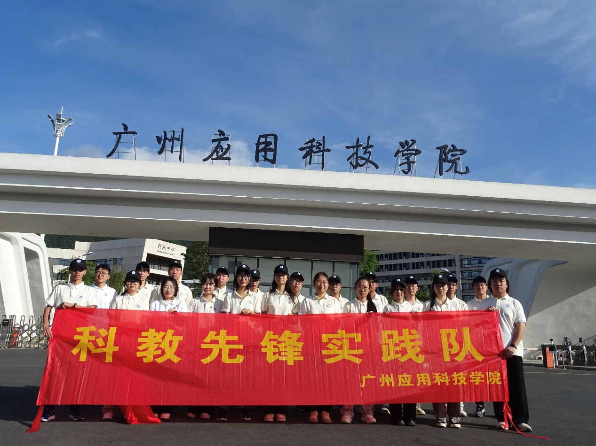

广州应用科技学院“科教先锋实践队”是一支积极响应国家乡村振兴战略、投身广东青年大学生“百千万工程”突击队行动的优秀青年队伍。该队伍由广州应用科技学院人工智能与电气工程学院、计算机学院以及体育科技学院的优秀学子联合组建。实践队以“科教先锋”为名，旨在深入基层一线，用青春力量助力乡村科教振兴，描摹乡村振兴的教育底色。

科教先锋实践队成员合影
在实践地点与核心任务上，实践队依托肇庆市鼎湖区莲花镇莲塘小学，精心策划并开展了主题为“寓教于乐，造梦童年”的暑期夏令营活动。队伍充分发挥跨学科的专业优势，将高校的教育资源与乡村的实际需求紧密结合。例如，计算机学院的学子通过生动有趣的美术游戏课程，培养孩子们的观察力、辨别力与团队合作精神；人工智能与电气工程学院的学子则化身“小小科学家”导师，利用气球、醋、小苏打等日常物品开展趣味化学实验，有效激发了乡村儿童的科学思维与探索兴趣，鼓励他们与家人共同在生活中发现科学现象。
在团队建设与教学管理上，科教先锋实践队展现出了极高的专业素养与严明的纪律性。出征前后，带队老师多次强调筑牢安全意识、树立师德师风典范以及明确身份转变，要求队员们在与小学生交流时保持平等态度，既要展现“大哥哥”“大姐姐”的亲和力，又要树立教师威信，做好课堂纪律管理。实践队内部建立了完善的复盘与教研机制，每日授课后及时总结经验，针对教学对象、内容与方向不断打磨教案与演示文稿。同时，队伍通过设立临时班干部、小队长及课程奖励机制，不仅有效培养了乡村儿童的自我管理能力，也进一步强化了队员自身的责任感与时间观念。
作为一支有理想、敢担当、能吃苦、肯奋斗的新时代青年队伍，广州应用科技学院科教先锋实践队以“三下乡”社会实践为契机，真正做到了深学细照、见行见效。队员们不仅在助力乡村科教振兴的生动实践中贡献了智慧与汗水，也在见贤思齐、自我反省的过程中实现了个人的成长与蜕变，用实际行动诠释了“以青春之我，助力乡村科教新画卷”的使命与担当。